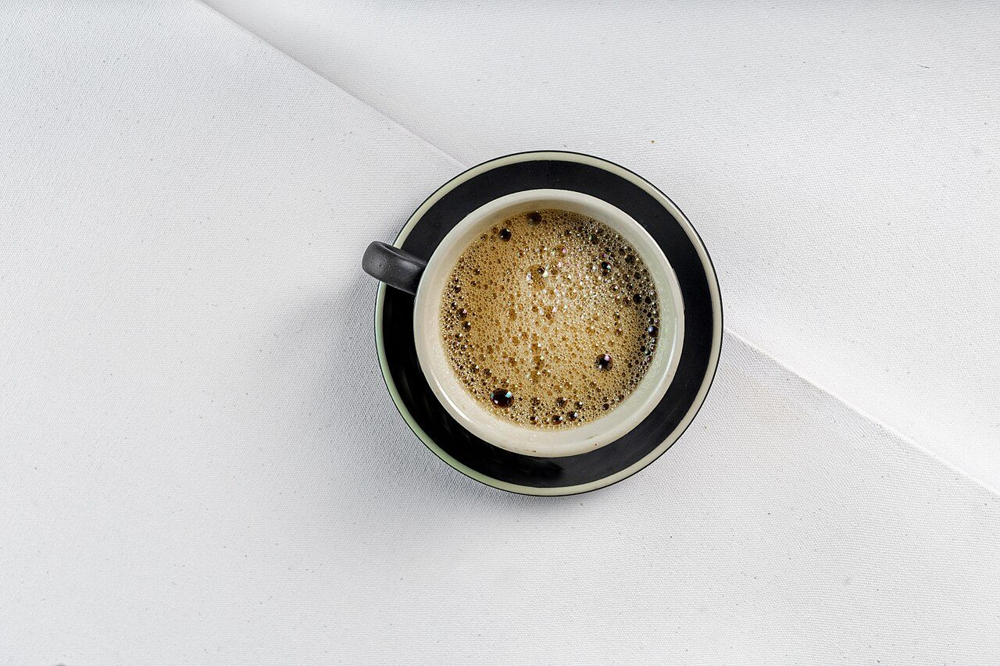

写真はお店のものではなく、国外または撮影地不明のフリー素材です。提供している商品を示すものではありません。
⑥ 脚
写真のイメージ(パン)
フレンチプレスを支える脚のように、写真のイメージをここに並べています。写真はお店のものではなく、撮影地不明のフリー素材です。


① ノブ
お店のこと(確認できたものだけ)
押し棒の頭のノブのように、いちばん手がかりになる、確認できた情報をここに置いています。
| 所在地 | 〒874-0930 大分県別府市光町２０−１４ |
|---|---|
| 電話 | 準備中 |
| 営業時間 | 準備中 |
| 定休日 | 準備中 |
| ご予約 | 準備中 |
| 駐車場 | 準備中 |
| SNS | Instagram @cafe_kumonomine |